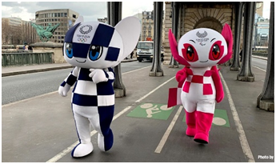
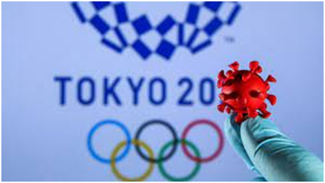
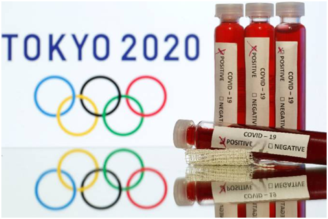

Os Jogos Olímpicos de Tóquio vêm sendo planejados desde o ano passado, mas aconteceram apenas este ano por causa da pandemia do covid-19. Esse mesmo motivo acarretou diversas discussões e polêmicas em torno dos acontecimentos dos jogos. Tais preparações envolveram medidas contra o coronavírus, desenvolvimento e divulgação das mascotes e a preocupação com a sustentabilidade do evento.
As Olimpíadas de Tóquio, como o próprio nome diz, foram realizadas no Japão, Tóquio, de 23 de julho a 8 de agosto de 2021, no Estádio Nacional do Japão. Desde o ano passado, os jogos olímpicos estão sendo discutidos. Por causa da pandemia do covid-19, eles foram adiados para este ano.
Entre os preparos para o evento, podemos citar a preocupação com a sustentabilidade: a parte interior de mais de 5 mil medalhas foi fabricada com lixo eletrônico (resíduos colhidos de celulares e outros produtos), o que permite a reutilização e a reciclagem desse material. Outro preparativo para as Olimpíadas são as mascotes: Miraitowa é a mascote das Olimpíadas, e Someity é a das Paraolimpíadas. A estética delas representa a tecnologia avançada do Japão.

Quanto à evolução da pandemia e da luta contra a propagação do vírus na cidade, o ritmo de vacinação diário estava abaixo da média mundial, o que contrastava com o contínuo crescimento das infecções no país com a 11ª maior população no mundo (Japão). Essa situação de lentidão na vacinação e de aumento de casos de covid-19 foi refletida nos protestos contra as olimpíadas: pesquisas apontam que aproximadamente 70% da população era contrária à celebração dos jogos.
As críticas ao governo japonês pela realização das olimpíadas não paravam: uma petição a favor do cancelamento do evento contava com mais de 350 mil assinaturas que rogavam pela “priorização da vida”. As autoridades, porém, rejeitaram tal petição, mesmo sabendo que ela refletia a opinião pública. A Assembleia de Tóquio negou esse apelo alegando que haveria um grande custo com o cancelamento das Olimpíadas. O criador da petição, Kenji Utsunomiya rebateu esse argumento ao afirmar que “A vida das pessoas é mais importante que dinheiro”. O Governo metropolitano de Tóquio também respondeu que “iria aprimorar ainda mais as medidas contra o coronavírus, antes dos jogos”.

Com a permanência dos jogos, a organização do evento determinou medidas sanitárias para as Olimpíadas de Tóquio, a fim de promover a segurança dos participantes. Alguns exemplos são a obrigatoriedade do uso de máscaras, o distanciamento social, e a necessidade de um exame de covid-19 negativo, antes que a pessoa embarcasse. O transporte público japonês também não pôde ser utilizado sem autorização. Uma orientação interessante foi a do incentivo aos atletas com palmas, evitando-se gritar ou cantar. A vacinação para a participação não foi obrigatória, mas os participantes foram estimulados a se vacinar em seus países assim que for possível.
Algumas modalidades dessas olimpíadas foram: basquete, esgrima, natação, tênis, beisebol, canoagem, ciclismo, golfe, boxe, judô, etc.
Como pudemos ver, alguns dos atletas que mais se destacaram nessas olimpíadas foram: Italo Ferreiro, do surf, que conquistou ouro, assim como Rebeca Andrade, da ginástica artística. Rayssa Leal, a famosa fadinha do skate, ganhou medalha de prata. Isaquias Queiroz também ganhou prata na canoagem de velocidade. Bruno Fratus (natação 50 m livres) e Mayra Aguiar (judô) ficaram com o bronze. Assim foi o ótimo desempenho do Brasil nas Olimpíadas de Tóquio.
